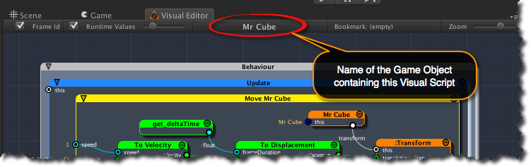

In this section, we examine the core constructs of iCanScript with the help of a small example. To that end, we shall first establish the working parameters of our example by creating a storyline and setting up the scene before implementing the visual scripts.
The following is a summary of the steps to build our first example:
If you are like me, you prefer learning the workings of a tool in the context of a small example. Like all good game designers, I like to give a soul to my project using a storyline. We can then extract working scenarios to direct the creation of our visual scripts.
Here goes the story:
In the land of Emptiness lives Mr Cube. Mr Cube has a busy life roaming around on an invisible 2D plane. Since Mr Cube is a close relative of Mr Fly, he is attracted to Ms Light that also lives in the land of Emptiness. Little does Mr Cube know is that Ms Light is shy and she get “turned off” if anyone comes to close to her. When in the dark, Mr Cube panics and runs around in all directions. Luckily for Mr Cube, Ms Light gets “turned on” when Mr Cube is far enough from her.
(Wow! we got romance, terror and deception. What a great plot!)
Before creating visual scripts, we first need to build a scene in Unity and populate it with actors. Based on the storyline, the actors are (the camera has been purposely omitted):
The main characteristics of the actors are:
You may ask yourself why two trigger zones? We want to avoid Ms Light from rapidly transitioning on and off while Mr Cube nears her. If only one trigger zone existed, Mr Cube could navigate on the edge of the trigger zone causing Ms Light to flicker. By creating a buffer area between the on trigger (near) and the off trigger (far), we remove the possibility of Ms Light flickering.
We are now ready to build our scene in Unity. First, we need a fresh new Unity project with an installed version of iCanScript. For the purpose of this tutorial, the project will be named “Houpi Youpi” (I don’t know how to call it! So please bear with me…).
Open Unity and select the File->New Project… menu item as shown in the image below:
Next you will be asked for a project name and prompted to install standard Unity packages. Enter “HoupiYoupi” as the project name. None of the Unity packages will be required for this tutorial. So don’t select any and close the dialog box by clicking the Create Project button.
You now have a bare project in which to import iCanScript. Please follow the instructions in the [installation] section to download the latest version of iCanScript if you haven’t already done so. Use the Assets->Import Package->Custom Package… menu item to import iCanScript into your project. Once you complete the import, your project panel in Unity should look as follows:

Ok, we are ready to bring our actors into the scene. For each new project, Unity creates a default scene with the main camera object. You will add the actors to the default scene using the GameObject->… menu.
Let’s start by adding Ms Light. Select the GameObject->Create Other->Directional Light menu item and, swoosh … Ms Light appears.
Double click on the “Directional light” label in the hierarchy panel to rename it to “Ms Light”. Because Ms Light is a directional light, she lights the scene equally regardless of her position. For consistency shake with our story, I suggest you position her at (0,0,0) as show in Figure 5.

Unity Tips
What’s a Directional Light?
A directional light illuminates the scene with uniform intensity regardless of the distance from the light source. It is often used to simulate the sun. Its light direction and color can be configured to create various time-of-day effects and neat extra-terrestrial atmospheres. The default color and direction of the directional light source is adequate for our example.
The two trigger zones are spheric in shape and are create with the GameObject->Create Other->Sphere menu.
After you have created both trigger zones, you need to configure them as follows:

We are now ready for our final actor: Mr Cube. Use the GameObject->Create Other->Cube menu item to add Mr Cube to the scene.

Once more, you need to set the initial parameters of the new actor. Mr Cube must be configured as follows:


All of our actors are now included in the scene. However, we still need to make one last adjustment: hide the trigger zones.
The trigger zones are the “magic” that makes actors change behaviour and everyone knows that “magic” must be invisible. So, let’s hide those spheres for no one to see. To hide the trigger zones, you need to disable the Mesh Renderer as depicted in the below figure.
Unity Tips
What’s a Renderer?
The renderer is the Unity entity responsible for drawing the scene objects. Each object in a Unity scene includes a renderer component to control its drawing properties. By disabling the Mesh Renderer, you are telling Unity to forgo the drawing of the trigger zones hence hiding them from the user. Hiding the trigger zones does not change the behaviour of other components such as collision detection that is dear to us.
You are now ready to build your visual scripts!!!
(finally you must be saying to yourself).
You are almost ready to create your first visual script. Before you do so, you need to open the following four iCanScript editors:
All of the editors can be opened for the Window->iCanScript->… menu item. The Visual Editor requires a significant screen area so I propose that you combine it with the Scene or Game window. All of the other editors are narrow and tall and may be combine with the Unity Project, Hierarchy, or Inspector panels.
My preferred window setup for working with iCanScript is:
Of course the layout is a matter of taste and you should organize it to your licking (a two screen layout is the best!).
Finally, you are ready to write your first visual script. Mr Cube movement is ratter complex and shall be implement in phases. In this section, you will create a visual script to move Mr Cube at a consistent speed regardless of the performance of the computer or game platform running the script.
What you will learn…
In this section you will learn several key aspects of iCanScript including:
- Adding a visual script to a game object;
- Defining message handler nodes to process Unity messages;
- Structuring your visual scripts by encapsulating functionality inside Package nodes;
- Designing logic flows and computations using visual scripts;
- Using and binding scene objects into your visual scripts;
- Navigating and extracting entity, variable and function nodes from the iCanScript library;
The first step is to install a visual script on Mr Cube. This is accomplished by:

A visual script is now installed on Mr Cube and ready to receive Unity messages. To edit the visual script, you must select Mr Cube (if not already done) and activate the Visual Editor by clicking on its tab.
 iCanScript User Interface Tips
iCanScript User Interface Tips
Visual Editor :: Centring the visual script (Shift-F):
The hot key Shift-F can be used to resize and reposition the visual script in the centre of the viewport. (See the [navigation][] for additional hot keys.)
Scene Editor :: Visualizing which object contains a visual script:
In the Scene editor, iCanScript displays its logo in front of each object that contains a visual script.
[iCanScript Gizmos displayed on game objects with visual scripts.]
Visual Editor :: Selecting the visual script to edit:
The Visual Editor provides a graphical view of the visual script installed on the selected game object. To edit a visual script, you first need to select the game object that contains the visual script.
The name of the game object containing the visual script is displayed in the toolbar of the Visual Editor.

Note: The Visual Editor continues to edit the same visual script (previous selection) if the object selected in the Hierarchy panel does not contain a visual script.
Currently your visual script contains a single grey node named: Behaviour. For iCanScript, the Behaviour node is special in two ways:
Before furthering our example, let’s take a moment to examine some of the core constructs of iCanScript:
iCanScript Core Concepts
iCanScript supports two categories of nodes:
Action nodes:
Action nodes execute functionality created outside the realm of iCanScript. Nodes extracted from libraries and handwriting code are good examples of action nodes.
iCanScript does not have the ability to look inside or alter the functionality underlying Action nodes. For iCanScript, Action nodes are black-boxes that can be inter-connected, conditionally executed, and packaged to create high-level functionality.
Composite nodes:
Composite nodes are used to organize, abstract, and control a subset of the visual script. The subset is embedded, using nesting, inside the composite node creating a parent / child relationship.
A Composite node activates its child nodes if the conditions for it own activation are met. For example, a message handler node will execute its internal visual script only when it receives the appropriate message.
Composite nodes exist in several flavours each with distinct behaviour and trigger conditions.
iCanScript Core Concepts
Every visual script is composed of one Behaviour node and one or more Message Handler node(s).
Behaviour Node:
Behaviour is a special composite node that coordinates the execution of the overall visual script. It waits for messages sent from Unity’s engine to trigger a subset of the visual script.
The Behaviour node uses Message Handler nodes to identify which messages the script operates on.
Before creating a visual script, you must first decide which of the Unity messages triggers the execution of your script. A message handler node must be created and embedded in the Behaviour node for each message your visual script responds to.
Details pertaining the available Unity messages are documented in the MonoBehaviour section of the Unity Script Reference guide.
Message Handler Nodes:
A Message Handler node is a composite node associated with a specific Unity message. Its purpose is to bridge a Unity message with a subset of your visual script.
When the Behaviour node receives a message, it updates the input port values (message parameters) and activates the corresponding Message Handler node. The script you create to respond to the message must be embedded in the corresponding Message Handler node.
Before displaying a new frame, Unity sends an Update message to each game object in the scene asking them to prepare for the upcoming frame. This Update message is ideal to trigger the execution of the visual script to move Mr Cube. It gives you the chance to recompute Mr Cube position immediately before the scene is displayed.
Your next step is to install the Update message handler node whom will serve as the parent trigger for your visual script. The creation of the Update message handler node is realized as follows:
1- Right click on the Behaviour node to reveal the list of message handlers it supports; 2- Click the + Update menu item to install the message handler node;
A new child node called Update is create inside the Behaviour node. The Update node is blue indicating that it is a message handler. You are now ready to create the visual script to move Mr Cube inside the Update node.
Mr Cube visual script will evolve to become somewhat involved as you increase its functionality. To avoid complex and overblown graphs, you should consider structuring the visual script from its inception.
The following diagram depicts the high-level design of the visual script you will create for Mr Cube:

It’s good practice to segregate and encapsulate functionality into tight bundles and iCanScript has the right Composite node to do so: (drum roll…) the ‘Package’.
The Package is iCanScript most flexible node. It can contain complex graphs and expose only those ports that are made public by the visual script designer. To modify a Package, it will need to be unfolded, showing its internal graph. Once you have completed its functionality, you may want to fold it so that it displays as a singular node or iconize it to reduce visual clutter.
The following diagram shows the controls to fold/unfold and iconize a Package node.

Let’s create a package to encapsulate the basic movement functionality of Mr Cube. This is achieved by:

iCanScript adds a package node under the Update message handler. By default, the package is yellow and named “:Package”. A name that better describes the purpose of the package would be better suited. Do let’s rename your new package to: “Move Mr Cube”.
iCanScript User Interface Tips
Modifying name of visual elements:
Modifying the node or port name is realized either from the Inspector or the iCanScript Hierarchy Tree.
The Inspector grants detail access to the node or port that is selected in the visual script. It is however limited the selected element only and will require re-selecting if more then one element needs to be modified.
The iCanScript Hierarchy Tree offers a tree-like navigation of the entire visual script. It also allows for changing visual element names. In this tutorial, we will always use the Hierarchy Tree when modifying node and port names.
Let’s use the Hierarchy Tree to change the name of the package.
From the Visual Editor, right click on the :Package and select the Show in hierarchy menu item (figure 19). This action displays the selected node in the Hierarchy Tree.

Double click on the package name in the Hierarchy Tree to modify it to “Move Mr Cube” (figure 20).
Note: The Visual Editor and Hierarchy Tree are two views into the visual script. This means that modifications done in the Hierarchy Tree are reflected in the Visual Editor and vice-versa.

It’s now time to put beef into your hamburger! The first ingredient you need is Mr Cube. He can be brought into the visual script by dragging him from Unity’s Hierarchy panel into the Move Mr Cube package (see figure 21).

The new Mr Cube node is coloured orange indicating that it is an instance of an entity. Factually, Mr Cube is an instance of a Game Object: a complex entity that contains several components defining its capabilities.
iCanScript User Interface Tips
Instance Nodes and the Instance Wizard iCanScript includes a dedicated editor called the Instance Wizard to manage the variables and operations associated with nodes representing object instances. The Instance Wizard is automatically brought forward when such a node is selected.
Using a simple point-and-click interface, the Instance Wizard can expose or hide the internal variables and operations of the instance. It is divided in three (3) sections:
Instance (top section):
The top section consists of a drop down menu that lists the available functions to create an instance of the proper node type and bind it to the ‘this’ port. Since we have dragged in Mr Cube, iCanScript has assumed that the instance should be set to the Mr Cube game object.
Variables (middle section):
The middle section displays all of the variables (fields & properties) of the instance. You may expose those variables as input and/or output ports by modifying the checkbox on the left of the variable name.
Operations (bottom section):
The bottom section gives access to the operations available for the instance as a list of buttons. Clicking on the operation name exposes that operation on the instance node. Clicking again removes the operation.
In Unity, a game object and its components form a group of inter-related objects. The game object maintains a list of all of its components and each component keeps a reference back to the game object as depicted in figure 22.
To gain access to a component of the game object, you first need to extract it as a separate instance node. You can then interact with the component variables and operations using the Instance Wizard.
Unity Tips
The number and type of components that can be attached to a game object is not limited to the listed displayed in figure 22. The Unity library includes a set of standard components and allows for extending the game object functionality with user defined components.
When you create a visual script on a game object, you are in fact extending that game object by attaching an iCS_VisualScript component to it. iCanScript then uses the iCS_VisualScript component to edit, compile and run you visual script.
The component of interest for moving Mr Cube is called the Transform. It defines the position, rotation, and scale of the game object. Moving Mr Cube requires that you change its position hence change its Transform component.
Exposing the Transform of Mr Cube requires that: 1- you reveal the port associated with the Transform component and then; 2- extract the transform node to gain access to its variables and operations.
STEP #1: Revealing the transform port:
Revealing the transform port of Mr Cube is a simple matter of: - selecting the Mr Cube node to reveal the Instance Wizard (figure 23); - clicking the checkbox on the left side of the “transform” variable in the Instance Wizard (you may need to scroll to the bottom of the Variables section).
STEP #2: Extracting the transform instance node:
The next step is to extract the transform node from Mr Cube. The good news is that iCanScript includes a feature that automatically creates an instance node when you drag a port into an empty area.
Since the Move Mr Cube package tightly surrounds the Mr Cube node, dragging the port into an empty area inside the Move Mr Cube node may be challenging (Undo can be used if mistakes are made). In the current situation, the easiest way is to drag the transform port up towards the title bar of the Move Mr Cube node and release it their (see figure 24).
You can later reposition the new transform node by dragging it from its title bar. Likewise, you can relocate the ports by sliding them on the boundaries of the node.
Unity Tips
Game Object Transform:
Every Game Object in Unity includes a Transform component. The Transform component defines the position, rotation, and scale of the object with respect to its parent. If no parent exists, then the Transform is considered global – relative to the world coordinates – as for all actors in our example.
Now that you have access to the Transform instance node, you can select it and browse its variables and operations using the Instance Wizard (figure 25).
If you browse the Operations section, you will find that the Transform node includes several Translate(…) operations that can be used to move Mr Cube. We are interested in the Translate operation that utilizes a Vector3 type for the displacement.
To add the Translate operation to your visual script, you will need to depress the Translate(translation:Vector3) button of the Instance Wizard. Once the operation is added, its button is shown as depressed and the text as bolded. Clicking the button a second time will remove the operation from the visual script. Make certain that the Translate operation is added before moving on.
With the Translate operation added, you’ll notice a new port named “translation.Translate” appearing on the Transform node. As you may have guessed, this new input port configures the translation to be applied by the Translate operation.
The default value for the translation is (0,0,0). You will learn to create a visual script to dynamically change the translation value in the sections to follow.
Your next task is to feed a displacement value to the Translate operation of Mr Cube. While this seams easy, it does present a challenge…
The Challenge: The problem is that the displacement is applied for each frame and that the frame rate (# of frames / second) is dependent on the performance of the computer or gaming platform. This means that if the same displacement value is applied, Mr Cube will move lightning fast on high-end gaming computers and turtle slow on entry level portable devices.
The Solution: To maintain constant velocity on all platform regardless of their performance, you need to adjust the magnitude of the displacement according to the frame rate. So how do you do that?
As starters, you need to control the velocity of Mr Cube and derive the displacement from it. The displacement is computed by equation #1:
Eq. #1. Calculation of the displacement for a frame
displacement= velocity * frame_duration;
The result of this equation is that higher the frame rate, smaller are the displacement values added to the movement for each frame. Therefore, the velocity is maintained irrespectively of the computing performance.
From equation 1, you need to bring in play an operator that multiplies the velocity (a Vector3 value) and the frame duration (a scalar value).
Using the search field in the iCanScript library, type the characters “mul” to reveal the available multiply operators. Drag the multiply operation under the Vector3 type into the Move Mr Cube package as depicted in figure 26.

The “op_Multiply” node is coloured green indicating that it is a function. Functions are created outside iCanScript and imported into the iCanScript library. In this particular case, the multiply operator is a member function of the Vector3 class that is part of the Unity Engine library (the hierarchy in the Library Tree is reminiscence of this structure).
The new node is created with generic names. To improve on the clarity of the visual script, you should rename the node and its ports to reflect the intended functionality.
Follow these steps to rename the op_Multiply node:
iCanScript User Interface Tips
You need to double click on the name in the hierarchy tree to edit it.

The next step is to bind the displacement output port of the To Displacement node to the translation input port on the Transform node. This is super simple to accomplish: just drag the “displacement” port onto the “translation.Translate” port and … Voilà! it’s done. Now the computed displacement changes the position of Mr Cube on every frame.

You are still missing the frame duration value. Unity has us covered with that. The Time type supports several time related functions. The duration of the last executed frame is held in a variable named deltaTime.
Start typing “delta” in the search field of the Library panel to expose the deltaTime variable. You should see it under the Time type of the UnityEngine section.
Drag it from the library into the Move Mr Cube package and bind its output (named :float) to the frameDuration input of the To Displacement node. The final result should look like figure 29.

Unity Tips
The CharacterController component:
Advised users of Unity will have noticed that we have reproduced the functionality to move a game object using relative speed; a functionality that is available in the CharacterController component.
We have deliberately avoided the CharacterController to focus the learning experience on building visual scripts. The CharacterController offers many features that are beyond the scope of this tutorial. We strongly advise that you take some time to learn about the CharacterController before building large on complex projects with Unity.
Referencing back to the overview of the visual script depicted in figure 16, you will notice that the Move Mr Cube package receives its input values from the Adjust Direction & Adjust Speed packages (you will build these packages later on). This means that separate controls for direction and speed are required.
Your next task is to extend your visual script to:
In our example, the speed and direction are defined as:
respectively.
From these definitions, you can calculate the velocity by scaling the direction vector (a unit vector) by the speed (a scale value) as described in equation #2:
Eq. #2. Calculation of the velocity.
velocity = speed * direction
Note: A unit vector is a vector who’s length is equal to one (1).
Equation #2 has exactly the same structure as the displacement calculation performed in the previous section: you need to multiply a vector value and a scaler value. This is your chance at trying another cool feature of iCanScript: node cloning (without social or legal issues!!!).
To clone the multiply operator, you need to press the Shift key and drag the To Displacement node in an empty area inside the Move Mr Cube package (see figure 30).

Once more, you should rename the node and ports to better describe the intent. Use the Hierarchy Tree as you have done for the To Displacement node to rename the new node and its ports as shown in figure 31.
You also need to bind the velocity output port of the new To Velocity node to the velocity input port of the To Displacement node.

Now you have completed the functionality of the Move Mr Cube package. The last step is to publish the speed and direction ports so that they can be accessed from outside the Move Mr Cube package. This is easily done by dragging them on the left edge of the Move Mr Cube package. The final build of the Move Mr Cube package can be seen in figure 32.

I bet your fingers are twitching to give your new script a go.
Before you do so, you need to configure initial values for the speed and direction ports. The initial values are configured using the Inspector.
Make certain that the Mr Cube game object is selected and open the Inspector. You will see that a visual script component is installed on Mr Cube. Unfold the visual script component and you will see that it contains two sections:
You will be using the Selected Object section to configure the “speed” and “direction” ports. Unfold the Selected Object section if it is folded.
With the Inspector open, select the speed port in the visual editor. You will see the details of the port presented in the visual script component. Change the speed value from zero (0) to one (1).
Now select the direction port in the visual editor. The Inspector information will change to match your new selection. Change the direction value from (0,0,0) to (–1,0,0).
You are all done; the initial values are now configured.

Hit the run button at the top of the Unity editor to give it a whirl (yeh!!!).
iCanScript compiles and runs your script. Mr Cube will start moving towards the centre of the scene (0,0,0) and continues forever in the same direction.
You can configure different values of direction and speed while your script is running. The new values are immediately impacting the behaviour of your script. However, the values configured while the engine is running are temporary and they will revert back to their initial configured values once the Unity game engine is stopped.
iCanScript User Interface Tips
The details of the selected node or port are accessible from the visual script component in the Inspector. The visual script component inspector is divided in two sections:
Selected Object:
This section allows to view and configure the attributes of the selected node or port.
Selected Engine Object:
This section displays in-depth information to help debug the visual script. This information will not be used in this tutorial.
Let’s take this opportunity to discuss some of the basic debugging features of iCanScript.
The visual editor remains active while the script is running. Selecting the visual editor tab will bring it forward. You may decide to relocate it so that both the visual editor and the game window be visible.
The visual editor displays the following runtime information in the centre of it’s toolbar:
In addition, the Visual Editor toolbar includes several options to control the display of runtime information. These options are:
Enable/Disable display of the frame # : Enable this control to display the last executed frame # in the title bar of each node. The display of the last executed frame # is especially useful when conditional execution is used. It helps differentiate the nodes that are executing from the nodes that are stalled.
Enable/Disable display of port values : Enable this control to display the runtime values of the ports. The runtime values are displayed in beige and are periodically refreshed.
Slider to control the refresh period : This slider is used to control the frequency at which the runtime information is displayed in the visual editor. Depending on the performance of your computer, the display of runtime information could impair on the frame rate of your game. Reducing the refresh rate of the runtime information will reduce the performance impact on your game.
So what have you done so far? You have: